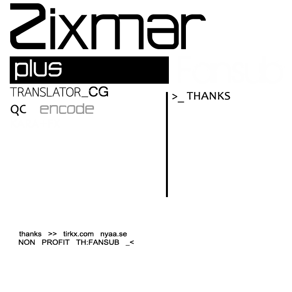

Home
Stream
Facebook
Download
GD / Google Drive (TV.Ver + SP.Ver + OAD.Ver)
Select Episode
EP 1-7
EP 1 | โดมิโน่
EP 2 | โชกิ
EP 3 | ขัดโต๊ะ
EP 4 | หมากล้อม
EP 5 | ตราประทับยางลบ
EP 6 | ซ้อมรับภัยพิบัติ
EP 7 | ส่งกระดาษโน๊ต
EP 8-14
EP 8 | โชกิ 2
EP 9 | ถักไหมพรม
EP 10 | กอล์ฟ
EP 11 | ปีนเขา
EP 12 | รถบังคับ
EP 13 | สระว่ายน้ำ
EP 14 | ข้าวกล่อง
EP 15-21
EP 15 | ซูโม่กระดาษ
EP 16 | โชกิ vs หมากรุก
EP 17 | ฟุคุวาราอิ
EP 18 | มายากล
EP 19 | เเว่นตา
EP 20 | พลิกหนังสือ
EP 21 | การตรวจสอบข้าวของเครื่องใช้ส่วนตัว
EP 22-23 (Special.Ver)
EP 22 (SP1) | แคมป์โรงเรียน
EP 23 (SP2) | ปั้นหิมะ
EP 22-23 (OAD.Ver)
EP 1 | ธงบนกองทราย + เเมว